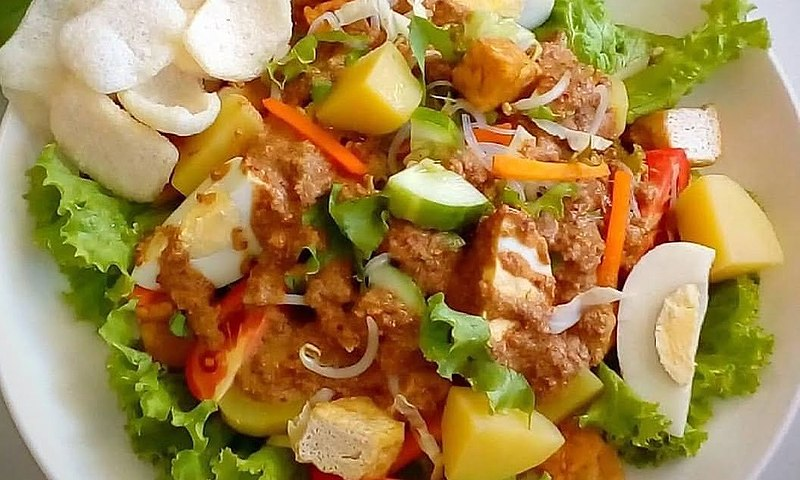
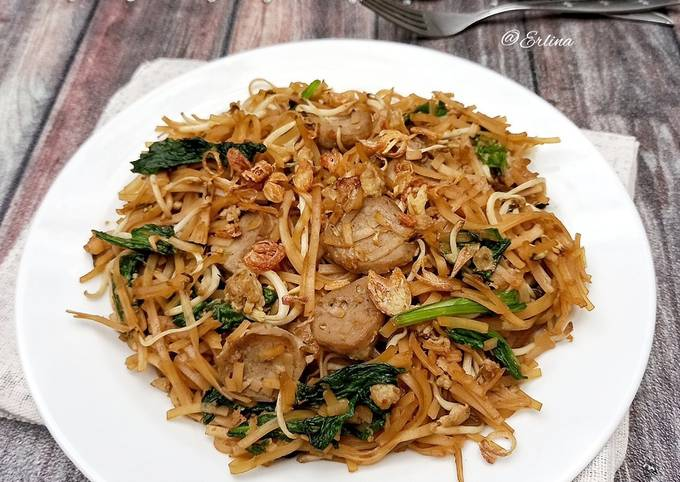

Nasi Goreng
Resep nasi goreng yang lezat dan mudah dibuat.

Bahan-bahan:
- 2 piring nasi putih
- 2 butir telur
- 2 siung bawang putih, cincang
- 1 buah bawang merah, cincang
- 2 sdm kecap manis
- 1 sdm saus tiram
- 1 sdm kecap asin
- 1 buah cabai merah, iris (opsional)
- 2 sdm minyak untuk menumis
- Garam dan merica secukupnya
- Acar dan kerupuk untuk pelengkap
Cara membuat:
- Panaskan minyak di wajan, tumis bawang putih dan bawang merah hingga harum.
- Tambahkan cabai merah (jika menggunakan) dan tumis sebentar.
- Masukkan telur, aduk-aduk hingga telur matang dan berbutir.
- Tambahkan nasi putih, aduk rata.
- Tambahkan kecap manis, saus tiram, kecap asin, garam, dan merica. Aduk hingga rata dan nasi berwarna coklat merata.
- Sajikan nasi goreng dengan acar dan kerupuk.
Gado-Gado
Resep gado-gado yang segar dan bergizi.
Bahan-bahan:
- 200 gram tauge
- 100 gram kacang panjang, potong-potong
- 2 buah kentang, rebus dan potong-potong
- 1 buah timun, iris tipis
- 2 buah tahu, goreng dan potong-potong
- 2 butir telur rebus, belah dua
- 100 gram kangkung, rebus
- 50 gram kol, iris tipis
Bahan saus kacang:
- 200 gram kacang tanah, goreng dan haluskan
- 3 siung bawang putih
- 5 buah cabai merah
- 2 sdm gula merah, serut
- 1 sdm air asam jawa
- Garam secukupnya
- Air secukupnya
Cara membuat:
- Rebus tauge, kacang panjang, kangkung, dan kol secara terpisah hingga matang, tiriskan.
- Untuk saus kacang, haluskan bawang putih dan cabai merah, lalu campur dengan kacang tanah yang sudah dihaluskan.
- Tambahkan gula merah, air asam jawa, garam, dan air secukupnya. Aduk hingga saus kental.
- Tata sayuran, tahu, telur, dan kentang di piring, lalu siram dengan saus kacang.
- Sajikan gado-gado dengan kerupuk.
Bakso
Resep bakso yang kenyal dan lezat.

Bahan-bahan:
- 500 gram daging sapi giling
- 100 gram tepung tapioka
- 4 siung bawang putih, haluskan
- 1 butir telur
- Garam dan merica secukupnya
- Air es secukupnya
Bahan kuah:
- 2 liter air
- 4 siung bawang putih, memarkan
- 3 batang daun bawang, iris
- 1 sdm garam
- 1 sdt merica
- Tulang sapi (opsional)
Cara membuat:
- Campur daging sapi giling, tepung tapioka, bawang putih, telur, garam, dan merica. Tambahkan air es sedikit demi sedikit hingga adonan bisa dipulung.
- Bentuk adonan menjadi bola-bola bakso.
- Rebus air dalam panci, masukkan bola-bola bakso. Masak hingga bakso mengapung dan matang, angkat dan tiriskan.
- Untuk kuah, rebus air dengan bawang putih, garam, merica, dan tulang sapi (jika menggunakan).
- Sajikan bakso dengan kuah, tambahkan irisan daun bawang.
Kwetiau
Resep kwetiau yang gurih dan nikmat.
Bahan-bahan:
- 200 gram kwetiau
- 100 gram udang, kupas
- 100 gram ayam, iris tipis
- 2 siung bawang putih, cincang
- 1 buah bawang bombay, iris
- 2 sdm kecap manis
- 1 sdm kecap asin
- 1 sdm saus tiram
- 1 sdm minyak wijen
- 1 butir telur
- Garam dan merica secukupnya
- Minyak untuk menumis
Cara membuat:
- Panaskan minyak di wajan, tumis bawang putih dan bawang bombay hingga harum.
- Masukkan udang dan ayam, tumis hingga matang.
- Tambahkan telur, aduk-aduk hingga telur matang dan berbutir.
- Masukkan kwetiau, aduk rata.
- Tambahkan kecap manis, kecap asin, saus tiram, minyak wijen, garam, dan merica. Aduk hingga rata.
- Sajikan kwetiau dengan taburan daun bawang.
Pizza
Resep pizza Italia yang lezat.
Bahan-bahan:
- 300 gram tepung terigu
- 1 sdt ragi instan
- 200 ml air hangat
- 2 sdm minyak zaitun
- 1 sdt garam
- 100 gram saus tomat
- 200 gram keju mozzarella, parut
- Berbagai topping (seperti pepperoni, jamur, paprika, dll.)
Cara membuat:
- Campur tepung terigu, ragi, garam, dan air hangat. Uleni hingga kalis.
- Tambahkan minyak zaitun, uleni lagi hingga elastis.
- Tutup adonan dengan kain bersih, diamkan selama 1 jam hingga mengembang.
- Giling adonan menjadi bentuk bulat tipis, letakkan di loyang pizza yang sudah diolesi minyak.
- Olesi adonan dengan saus tomat, taburi keju mozzarella dan topping sesuai selera.
- Panggang dalam oven dengan suhu 220°C selama 15-20 menit hingga matang dan keju meleleh.
Sushi
Resep sushi Jepang yang segar.
Bahan-bahan:
- 200 gram beras sushi
- 300 ml air
- 2 sdm cuka beras
- 1 sdt gula
- 1/2 sdt garam
- 1 lembar nori
- 100 gram ikan salmon segar, iris tipis
- Wasabi, kecap asin, dan acar jahe untuk pelengkap
Cara membuat:
- Cuci beras sushi hingga airnya jernih, tiriskan.
- Masak beras dengan air hingga matang, angkat dan biarkan sedikit dingin.
- Campur cuka beras, gula, dan garam, aduk hingga larut. Campurkan ke dalam beras yang sudah dimasak.
- Letakkan nori di atas mat sushi, ratakan nasi di atas nori dengan tangan yang dibasahi air.
- Tambahkan irisan salmon di atas nasi, gulung dengan rapi menggunakan mat sushi.
- Potong-potong sushi dan sajikan dengan wasabi, kecap asin, dan acar jahe.
Spageti
Resep spageti bolognese Italia yang klasik.

Bahan-bahan:
- 200 gram spageti
- 200 gram daging sapi giling
- 1 buah bawang bombay, cincang
- 2 siung bawang putih, cincang
- 400 gram tomat, cincang
- 2 sdm pasta tomat
- 1 sdt oregano kering
- 1 sdt basil kering
- 2 sdm minyak zaitun
- Garam dan merica secukupnya
- Keju parmesan parut untuk taburan
Cara membuat:
- Rebus spageti dalam air mendidih yang sudah diberi garam hingga al dente, tiriskan.
- Panaskan minyak zaitun di wajan, tumis bawang bombay dan bawang putih hingga harum.
- Masukkan daging sapi giling, masak hingga berubah warna.
- Tambahkan tomat cincang, pasta tomat, oregano, basil, garam, dan merica. Masak hingga saus mengental.
- Campurkan saus dengan spageti yang sudah direbus, aduk rata.
- Sajikan spageti dengan taburan keju parmesan.
Kebab
Resep kebab Timur Tengah yang lezat.

Bahan-bahan:
- 500 gram daging sapi atau domba, iris tipis
- 2 sdm minyak zaitun
- 2 siung bawang putih, haluskan
- 1 sdt paprika bubuk
- 1 sdt jintan bubuk
- 1 sdt ketumbar bubuk
- Garam dan merica secukupnya
- Roti pita atau lavash
- Sayuran segar (selada, tomat, bawang merah, dll.)
Cara membuat:
- Campur daging dengan minyak zaitun, bawang putih, paprika bubuk, jintan bubuk, ketumbar bubuk, garam, dan merica. Diamkan selama 30 menit.
- Panaskan wajan, masak daging hingga matang.
- Sajikan daging kebab dalam roti pita atau lavash, tambahkan sayuran segar.
- Gulung kebab, siap disajikan.